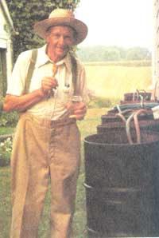
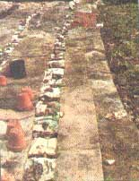
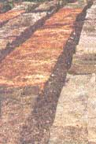

COUNTRY LORE
Deep-pile those weeds away.
An earthly answer to a gardener's heaven is just under your nose...er, your feet. Any way you roll them out, rugs do an outstanding job. They kill weeds, let in the water, are readily available, and extremely cheap.
For a typical row garden, discarded carpeting can be stripped into 30-inch widths and rolled out to create an edge and pathway between crops. Use a sharpened fishing knife, tin snips, or an Exacto knife to slice 30-inch strips of old jute-backed carpeting. To add longevity to the carpeting, first cover the soil beneath the carpet with black and white, soy-based newspapers and let 'er roll.
For the typical row garden, lay the row string, sow the seeds, dress with your favorite fertilizer, water, and do the next row in the same fashion. While the color and look may draw comment, the result is a saving of hoeing time, water, and back pain.
Similarly, when setting out hills of squash, cukes, or melons, I use a large single square rug and cut holes in the surface with a pattern to accommodate the plants or seeds. This provides both spacing for the vines and the mulch for the soil surface. I handle my tomato cages by laying a 30-inch strip, placing the cages and plants in a row, then use a healthy amount of newsprint to cover the three-foot space between the cages before laying the next row of carpeting.
Keeping one jump ahead of the trash pick-up is the easiest way to obtain your reusable strip mulching carpet. Striking a deal with a local carpet layer and requesting remnants of old carpets salvaged from recent installments is also an easy source.
The strips can be saved from season to season by rolling them up and storing them in piles near the garden. Mine have lasted for four years. The pieces that succumb to nature and defy pick-up, I rake together and deposit at the base of fruit and ornamental trees for a permanent mulch. But beware-don't allow this mulching to become too thick or it will invite rodents to nest and use your tree for fast food.
-Carol S. Larson
Harvard, IL
When the Frenchmen started to build the Panama Canal, they were defeated by a tiny but formidable opponent: the Anopheles mosquito, which had (and continues to have) a habit of carrying malaria. It turned out that the French actually brought the trouble to their doorstep. Aesthetics demanded that they have a moat around their cottage, which was unfortunately a perfect breeding place for this mosquito.
The United States moved in and soon scientists were dispatched to study the Anopheles mosquito. Since In 1902, the only light available for night work was from kerosene lamps, there was quite a bit of that fuel around. And when a drop of it accidentally fell into a jar of larvae, they died in a matter of five minutes. Flash! How to treat these mosquitoes was discovered.
When the U.S. Corp of Engineers sprayed the swamps with kerosene, control was well under way and fairly complete.
During World War II, I was a malaria control officer in Panama. We treated ponds in the early 1940s the same way I treat mosquitoes today, with kerosene.
A group of fertilized mosquito eggs, or a raft, looks like a burnt melon seed and hatches out in three days. The hatched larvae are organic feeders for seven days and then pupate into pupae, which do not feed. Three days later, the adult emerges from the pupae.
We have 24 rain barrels for watering our garden. To be on the safe side, I interrupt this life cycle in our barrels with two teaspoons of kerosene per barrel, or one teaspoon per five gallon bucket and stir it up to make a very thin film of oil on the surface. I treat these containers every seven days and kill millions of mosquitoes in the process.
Remember, the larvae are organic feeders. In cleari water, they will eat each other. Only a few adults will emerge from the 100 eggs per raft. The mosquito knows this and chooses dirty water to lay its eggs. The eggs are bright yellow when first laid, but turn black with the morning daylight. In dirty water, 100 eggs will emerge from a raft of eggs.
Invite the mosquito to come to your trap by setting out a container of dirty water and treat it according to these instructions. A note of warning: If you fail to treat your trap consistently, you will be raising mosquitoes. Use dirt, garbage, etc., to make an enticing trap. You will probably enjoy studying these insects and might encourage your children to do the same. The kerosene evaporates overnight and mosquitoes can use your trap the next evening.
-Niki Rini
Hartville, OH
I love to make use of all the fresh blackberries, peaches, blueberries, and apples that nature lavishes upon us during the fall. So I treat my family and friends to lots of crusty cobblers and pies. But I am also one of those people who can't bring herself to waste anything-even the tiniest piece of crust. If you, like me, find yourself with small pieces of pie crust dough that you hate to throw away, here's a rewarding solution: Place small balls of the leftover dough into miniature muffin pans and press them to fit the bottom and sides of the muffin cups. Pop the muffin pan into the oven along with your fruit cobbler and bake until lightly brown (about 10 minutes). Allow the small shells to cool and place in a freezer container that you can continue to add to each time you have leftover dough. By the time the holidays roll around, you will have dozens of these shells to thaw and fill with chicken salad, egg salad, veggie dips, jams, and anything else that might suit your fancy. These make an easy, festive, tasty addition to any party or special occasion. And, by the way, if you don't own a miniature muffin pan, this tip will make it worth your money to purchase one.
-Cathy Bowers
Lancaster, SC
It seems that a lot of people are tired of high cereal costs and would like something natural for breakfast. I bought the items for my cereal at the local co-op and it saved me about $2.50. Hope you enjoy the recipe.
½ cup rolled oats
½ cup oat bran
½ cup wheat bran
½ cup wheat germ
½ cup unsulfured molasses
Mix ingredients well. Don't add water or bake.
Note: The amounts in the recipe can be adjusted to your convenience and other items such as rye flakes can be added for variation.
-Howard Luloff
St. Louis Park MN
|
 Carl's carpeted translants |
 |
 |
|
|
|
|